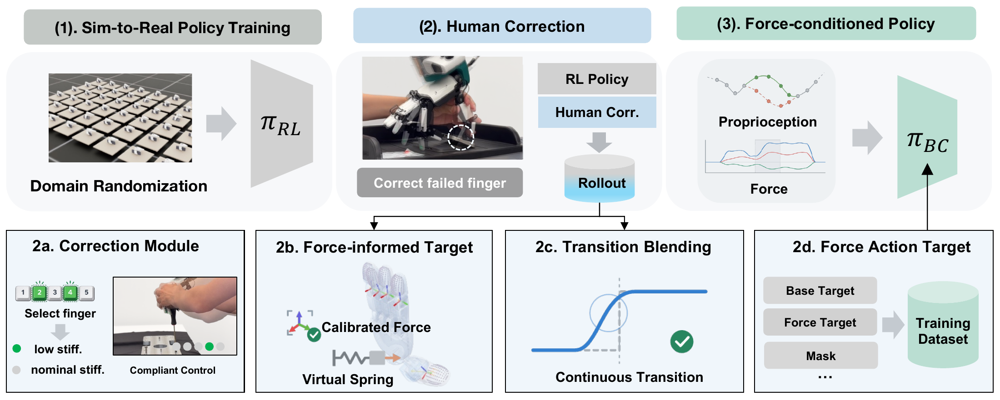

Abstract
Simulation-trained dexterous policies often fail at a few critical contacts while retaining useful whole-hand coordination. ReDex repairs these policies through brief physical corrections to selected fingers, while the base policy controls the rest of the hand. Corrected motion and fingertip forces provide training targets for a standalone policy. On real hardware, ReDex improves object flipping and screwdriver rotation across five objects, with no human intervention at deployment.
Pipeline

Real-World Results
The repaired policies flip objects and rotate screwdrivers autonomously.
25 trials per object–method pair. Flipping: stable 90° reorientation. Rotation: progress toward 360°, measured in 90° increments. Base: simulation-trained RMA.
Policy Rollouts
All policy videos below are fully autonomous and shown at 1× speed, with no speed-up.
Cuboid Flipping
Cellphone Flipping
Screwdriver Rotation
Small Screwdriver
Large Screwdriver
How Humans Provide Help
Target reconstruction
Failure Cases
The phone slips out of the grasp during human correction.
The cuboid slides without completing the flip.
The flip completes with abrupt contact.
Finger motion does not sustain rotation.
Repeated regrasping produces little rotation.
The handle makes little rotational progress.
The cuboid drops back to the tray.
The cuboid stays tilted instead of flipping.
The screwdriver slips through the fingers and drops.